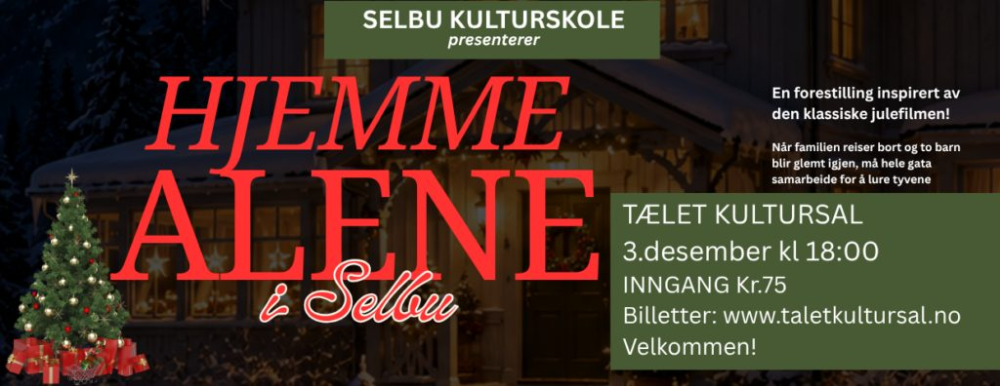

HJEMME ALENE – I SELBU
– kl. 20.00
Tælet Kultursal, Bellvegen 18, 7580 Selbu
HJEMME ALENE – I SELBU
Selbu kulturskoles juleforestilling!
En forestilling inspirert av den klassiske julefilmen. Når familien reiser bort og to barn blir glemt igjen, må hele gata samarbeide for å lure tyvene.
Én pris for alle; billetter kjøpes på nett. Ledsagerbevis godkjennes.
Velkommen til Tælet kultursal!